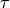
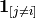
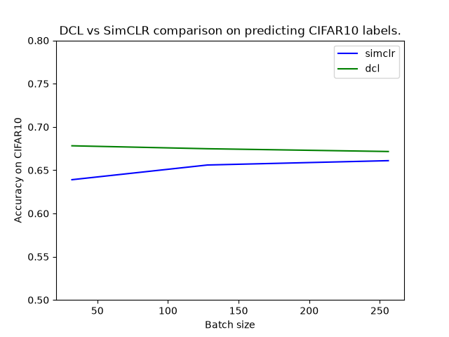

Note
Go to the end to download the full example code.
Decoupled Contrastive Learning¶
This tutorial illustrates the use of Decoupled Contrastive Learning (DCL) [1] which introduces a reformulation of the InfoNCE loss used in SimCLR [2] that removes the negative-positive coupling in the loss. This modification stabilizes optimization and improves performance, especially when training with small batch sizes.
In this tutorial, we will use the CIFAR10 dataset to train models based on DCL and SimCLR and compare their performances for different batch sizes using the nidl library.
We will follow these steps:
Load the CIFAR10 dataset.
Define the data augmentations for self-supervised training.
Define the DCL and SimCLR models.
Train the models for different batch sizes.
Compare the obtained representations on CIFAR10 test set with linear probing.
Setup¶
This notebook requires some packages besides nidl. Let’s first start with importing our standard libraries below:
import matplotlib.pyplot as plt
import numpy as np
import torch
from lightning_fabric import seed_everything
from sklearn.linear_model import LogisticRegression
from sklearn.metrics import accuracy_score
from torch import nn
from torch.utils.data import DataLoader, Subset
from torchvision import transforms
from torchvision.datasets import CIFAR10
from torchvision.models import resnet18
from nidl.estimators.ssl import DCL, SimCLR
from nidl.transforms import MultiViewsTransform
from nidl.utils.weights import Weights
We define some global parameters that will be used throughout the notebook. The parameter load_trained_models allows you to directly load the weights of the trained models from HuggingFace hub instead of training them directly in the notebook which takes time and resources (~3h on a NVIDIA RTX 4500 GPU).
Path where data should be downloaded
data_dir = "/tmp/cifar10"
# Whether to load the pretrained models or train them on your device
load_pretrained = True
# If loading model, directory where to save the weights
model_dir = "/tmp/nidl_example_dcl_vs_simclr"
# What accelerator to use: GPU if available, else CPU
accelerator = "gpu" if torch.cuda.is_available() else "cpu"
# Latent size of the representation
# /!\ If changing latent_size then you cannot load pretrained weights
latent_size = 128
# Number of workers (cpu cores) to use in dataloaders
num_workers = 4
# We fix the seed and generator for reproducibility
seed = 42
rd_generator = np.random.default_rng(seed=seed)
seed = seed_everything(seed)
Check parameters values
if latent_size != 128 and load_pretrained == True:
raise ValueError(
"Pretrained models have a latent size of 128 which can"
" not be modified. Set load_pretrained=True or"
" latent_size=128"
)
DCL Loss Function¶
The DCL loss function is based on InfoNCE and is defined as:
![\mathcal{L}_i^{(k)}
= - \big(\operatorname{sim}(z_i^{(1)}, z_i^{(2)})/\tau\big)
+ \log
\sum\limits_{l \in \{1,2\}, j \in \![1,N\!]}
\mathbf{1}_{[j \ne i]},
\exp\!\big(\operatorname{sim}(z_i^{(k)}, z_j^{(l)})/\tau\big)](../_images/math/b3ee4cfb31b08d23eb79b52e97c0f07fda0d7870.png)
Where:
-  and
and  are embeddings of two different
augmented views of the same image
-
are embeddings of two different
augmented views of the same image
-  is the cosine similarity
between normalized embeddings
-
is the cosine similarity
between normalized embeddings
-

is a temperature parameter controlling the concentration of the distribution -
is an indicator function that ensures decouplingThe key idea in DCL is to remove the contribution of the positive pair from the log-sum-exp normalization term of the InfoNCE loss. In standard InfoNCE, this term creates an implicit coupling between positive and negative similarities, which can bias gradient estimates when the batch size is small. By decoupling these terms, DCL reduces this bias and leads to more stable contrastive learning.
#
# Data Preparation
# -----------------
#
# We'll use the CIFAR10 dataset, which contains 50,000 training images and
# 10,000 test images of 10 different classes. We'll apply standard scaling
# transforms, the test dataset will be used to evaluate the model performance
# on the classification task. We subsample the dataset for faster inference.
#
# Load CIFAR10 dataset with standard scaling
#
# We subsample the test dataset to run the notebook faster.
scale_transforms = transforms.Compose(
[transforms.ToTensor(), transforms.Normalize((0.5,), (0.5,))]
)
train_xy_dataset = CIFAR10(
data_dir, train=True, transform=scale_transforms, download=True
)
train_indices = rd_generator.choice(
np.arange(len(train_xy_dataset)), size=10000, replace=False
)
train_xy_dataset = Subset(train_xy_dataset, train_indices)
test_xy_dataset = CIFAR10(
data_dir, train=False, transform=scale_transforms, download=True
)
test_indices = rd_generator.choice(
np.arange(len(test_xy_dataset)), size=5000, replace=False
)
test_xy_dataset = Subset(test_xy_dataset, test_indices)
0%| | 0.00/170M [00:00<?, ?B/s]
0%| | 819k/170M [00:00<00:20, 8.15MB/s]
3%|▎ | 5.34M/170M [00:00<00:05, 29.8MB/s]
8%|▊ | 12.8M/170M [00:00<00:03, 50.3MB/s]
13%|█▎ | 22.6M/170M [00:00<00:02, 69.0MB/s]
17%|█▋ | 29.6M/170M [00:00<00:02, 69.2MB/s]
23%|██▎ | 39.2M/170M [00:00<00:01, 78.0MB/s]
28%|██▊ | 47.0M/170M [00:00<00:01, 75.6MB/s]
33%|███▎ | 55.4M/170M [00:00<00:01, 78.4MB/s]
37%|███▋ | 63.3M/170M [00:00<00:01, 63.0MB/s]
41%|████ | 70.1M/170M [00:01<00:01, 57.5MB/s]
45%|████▍ | 76.2M/170M [00:01<00:01, 51.8MB/s]
48%|████▊ | 81.7M/170M [00:01<00:01, 48.2MB/s]
51%|█████ | 86.8M/170M [00:01<00:01, 47.8MB/s]
54%|█████▍ | 91.7M/170M [00:01<00:01, 44.9MB/s]
57%|█████▋ | 96.5M/170M [00:01<00:01, 45.5MB/s]
59%|█████▉ | 101M/170M [00:01<00:01, 43.6MB/s]
62%|██████▏ | 106M/170M [00:01<00:01, 43.6MB/s]
64%|██████▍ | 110M/170M [00:02<00:01, 41.6MB/s]
67%|██████▋ | 114M/170M [00:02<00:01, 40.9MB/s]
70%|██████▉ | 119M/170M [00:02<00:01, 41.6MB/s]
72%|███████▏ | 123M/170M [00:02<00:01, 41.1MB/s]
75%|███████▍ | 128M/170M [00:02<00:00, 43.0MB/s]
77%|███████▋ | 132M/170M [00:02<00:00, 41.1MB/s]
80%|████████ | 137M/170M [00:02<00:00, 43.3MB/s]
83%|████████▎ | 141M/170M [00:02<00:00, 41.0MB/s]
86%|████████▌ | 146M/170M [00:02<00:00, 43.3MB/s]
88%|████████▊ | 151M/170M [00:03<00:00, 41.2MB/s]
91%|█████████ | 155M/170M [00:03<00:00, 43.0MB/s]
94%|█████████▎| 160M/170M [00:03<00:00, 41.9MB/s]
96%|█████████▋| 164M/170M [00:03<00:00, 42.8MB/s]
99%|█████████▉| 169M/170M [00:03<00:00, 42.9MB/s]
100%|██████████| 170M/170M [00:03<00:00, 48.1MB/s]
/opt/hostedtoolcache/Python/3.12.13/x64/lib/python3.12/site-packages/torchvision/datasets/cifar.py:83: VisibleDeprecationWarning: dtype(): align should be passed as Python or NumPy boolean but got `align=0`. Did you mean to pass a tuple to create a subarray type? (Deprecated NumPy 2.4)
entry = pickle.load(f, encoding="latin1")
Dataset and data augmentations for contrastive learning¶
To perform contrastive learning, we need to define a set of data augmentations to create multiple views of the same image.
Finally we define the SSL dataloader for pretraining the models and the labelled dataloaders for testing the models.
Define augmentation transforms for contrastive learning
contrast_transforms = transforms.Compose(
[
transforms.RandomResizedCrop(size=32),
transforms.RandomHorizontalFlip(),
transforms.RandomApply(
[
transforms.ColorJitter(
brightness=0.8, contrast=0.8, saturation=0.8, hue=0.2
)
],
p=0.8,
),
transforms.RandomGrayscale(p=0.2),
transforms.GaussianBlur(kernel_size=9),
transforms.ToTensor(),
transforms.Normalize((0.5,), (0.5,)),
]
)
Load CIFAR10 data with contrastive transforms
train_ssl_dataset = CIFAR10(
root=data_dir,
train=True,
transform=MultiViewsTransform(contrast_transforms, n_views=2),
)
Create labelled dataloaders for the downstream task.
train_xy_loader = DataLoader(
train_xy_dataset,
batch_size=256,
shuffle=False,
drop_last=False,
num_workers=num_workers,
)
test_xy_loader = DataLoader(
test_xy_dataset,
batch_size=256,
shuffle=False,
drop_last=False,
num_workers=num_workers,
)
# We define a function that yields the data loader for
# SSL training given the batch size.
def get_ssl_loader(batch_size):
"""
Creates and returns a DataLoader for SSL training with specified batch
size.
"""
train_ssl_loader = DataLoader(
train_ssl_dataset,
batch_size=batch_size,
shuffle=True,
pin_memory=True,
num_workers=num_workers,
)
return train_ssl_loader
Model Architecture¶
Similarly to the original DCL paper, we use a ResNet18 encoder. Since CIFAR10 images are small, the kernel’s size in the first convolutional layer is decreased from 7 to 3 as reported in the ResNet paper.
def resnet18_encoder(latent_size):
"""
Creates a modified ResNet18 encoder with custom latent size for CIFAR10
images with reduced kernel size and removed max pooling.
"""
encoder = resnet18(num_classes=latent_size)
encoder.latent_size = latent_size
# Because CIFAR10 images are small, we reduce the kernel size of the first
# convolutional layer from 7 to 3.
# And remove the MaxPool layer.
encoder.conv1 = nn.Conv2d(
3, 64, kernel_size=3, stride=1, padding=1, bias=False
)
encoder.maxpool = nn.Identity()
return encoder
Defining SimCLR and DCL Models¶
Now we’ll configure the parameters for each model. We’ll train both models for 100 epochs.
%% Configure SimCLR and DCL models
def configure_models(batch_size):
simclr = SimCLR(
encoder=resnet18_encoder(latent_size),
proj_input_dim=latent_size,
proj_hidden_dim=latent_size,
proj_output_dim=latent_size,
temperature=0.07,
optimizer="sgd",
learning_rate=0.03 * batch_size / 256,
random_state=seed,
max_epochs=100,
enable_checkpointing=True,
enable_model_summary=False,
devices=1,
)
dcl = DCL(
encoder=resnet18_encoder(latent_size),
proj_input_dim=latent_size,
proj_hidden_dim=latent_size,
proj_output_dim=latent_size,
temperature=0.07,
optimizer="sgd",
learning_rate=0.03 * batch_size / 256,
random_state=seed,
max_epochs=100,
enable_checkpointing=True,
enable_model_summary=False,
devices=1,
)
return simclr, dcl
Comparing SimCLR and DCL Models for different batch sizes¶
We compare SimCLR and DCL using three batch sizes: 32, 128 and 256 and evaluate their performances on the downstream classification task.
To do so we first define a function to evaluate trained models on the CIFAR10 task with linear probing. Then we train both models for a given batch size, evaluate their performances and plot the results.
def eval_model_cifar10(model, train_xy_loader, test_xy_loader):
# We first extract the features of the train and test sets
X_train, y_train = model.transform_with_targets(train_xy_loader)
X_test, y_test = model.transform_with_targets(test_xy_loader)
X_train, y_train = X_train.cpu().numpy(), y_train.cpu().numpy()
X_test, y_test = X_test.cpu().numpy(), y_test.cpu().numpy()
# We define the linear probe
estimator = LogisticRegression(max_iter=500, random_state=seed, n_jobs=1)
# We fit the linear probe on the training set
estimator.fit(X_train, y_train)
# We predict the targets on the test set and compute accuracy
y_predict = estimator.predict(X_test)
acc = accuracy_score(y_test, y_predict)
print(f"Accuracy: {acc}")
return acc
def evaluate_models(dcl, simclr, train_xy_loader, test_xy_loader):
acc_simclr = eval_model_cifar10(simclr, train_xy_loader, test_xy_loader)
acc_dcl = eval_model_cifar10(dcl, train_xy_loader, test_xy_loader)
return acc_simclr, acc_dcl
Train models from scratch
def train_models(batch_size, simclr, dcl):
# Fit models
print(f"----------Fitting DCL for batch size = {batch_size}----------")
# Get SSL loader
train_ssl_loader = get_ssl_loader(batch_size)
dcl.fit(train_ssl_loader)
print(f"----------Fitting SimCLR for batch size = {batch_size}----------")
# Get SSL loader
train_ssl_loader = get_ssl_loader(batch_size)
simclr.fit(train_ssl_loader)
return simclr, dcl
# Load trained models' weights from HuggingFace
def load_weights(batch_size):
weights_simclr = Weights(
name="hf-hub:neurospin/nidl_example_dcl_vs_simclr",
data_dir=model_dir,
filepath=f"example_simclr_bs_{batch_size}.ckpt",
)
weights_dcl = Weights(
name="hf-hub:neurospin/nidl_example_dcl_vs_simclr",
data_dir=model_dir,
filepath=f"example_dcl_bs_{batch_size}.ckpt",
)
simclr = weights_simclr.load_checkpoint(
SimCLR,
encoder=resnet18_encoder(latent_size),
devices=1,
accelerator=accelerator,
enable_checkpointing=False,
logger=False,
)
dcl = weights_dcl.load_checkpoint(
DCL,
encoder=resnet18_encoder(latent_size),
devices=1,
accelerator=accelerator,
enable_checkpointing=False,
logger=False,
)
return simclr, dcl
Iterate over several batch sizes and save each model’s accuracy on CIFAR10
batch_sizes = [32, 128, 256]
# Store classification results
accuracies = {"simclr": [], "dcl": []}
for bs in batch_sizes:
# Load weights or else train models
if load_pretrained:
simclr, dcl = load_weights(batch_size=bs)
else:
simclr, dcl = configure_models(bs)
simclr, dcl = train_models(bs, simclr=simclr, dcl=dcl)
# Evaluate models on cifar10
acc_simclr, acc_dcl = evaluate_models(
simclr=simclr,
dcl=dcl,
train_xy_loader=train_xy_loader,
test_xy_loader=test_xy_loader,
)
accuracies["simclr"].append(acc_simclr)
accuracies["dcl"].append(acc_dcl)
/opt/hostedtoolcache/Python/3.12.13/x64/lib/python3.12/site-packages/pytorch_lightning/utilities/_pytree.py:21: `isinstance(treespec, LeafSpec)` is deprecated, use `isinstance(treespec, TreeSpec) and treespec.is_leaf()` instead.
Predicting ━━━━━━━━━━━━━━━━━━━━━━━━━━━━━━━━━━ 40/40 0:01:00 • 0:00:00 0.68it/s
Predicting ━━━━━━━━━━━━━━━━━━━━━━━━━━━━━━━━━━ 20/20 0:00:30 • 0:00:00 0.66it/s
Accuracy: 0.638
/opt/hostedtoolcache/Python/3.12.13/x64/lib/python3.12/site-packages/pytorch_lightning/utilities/_pytree.py:21: `isinstance(treespec, LeafSpec)` is deprecated, use `isinstance(treespec, TreeSpec) and treespec.is_leaf()` instead.
Predicting ━━━━━━━━━━━━━━━━━━━━━━━━━━━━━━━━━━ 40/40 0:01:00 • 0:00:00 0.68it/s
Predicting ━━━━━━━━━━━━━━━━━━━━━━━━━━━━━━━━━━ 20/20 0:00:30 • 0:00:00 0.66it/s
/opt/hostedtoolcache/Python/3.12.13/x64/lib/python3.12/site-packages/sklearn/linear_model/_logistic.py:470: ConvergenceWarning: lbfgs failed to converge after 500 iteration(s) (status=1):
STOP: TOTAL NO. OF ITERATIONS REACHED LIMIT
Increase the number of iterations to improve the convergence (max_iter=500).
You might also want to scale the data as shown in:
https://scikit-learn.org/stable/modules/preprocessing.html
Please also refer to the documentation for alternative solver options:
https://scikit-learn.org/stable/modules/linear_model.html#logistic-regression
n_iter_i = _check_optimize_result(
Accuracy: 0.6788
/opt/hostedtoolcache/Python/3.12.13/x64/lib/python3.12/site-packages/pytorch_lightning/utilities/_pytree.py:21: `isinstance(treespec, LeafSpec)` is deprecated, use `isinstance(treespec, TreeSpec) and treespec.is_leaf()` instead.
Predicting ━━━━━━━━━━━━━━━━━━━━━━━━━━━━━━━━━━ 40/40 0:01:00 • 0:00:00 0.67it/s
Predicting ━━━━━━━━━━━━━━━━━━━━━━━━━━━━━━━━━━ 20/20 0:00:30 • 0:00:00 0.66it/s
Accuracy: 0.6558
/opt/hostedtoolcache/Python/3.12.13/x64/lib/python3.12/site-packages/pytorch_lightning/utilities/_pytree.py:21: `isinstance(treespec, LeafSpec)` is deprecated, use `isinstance(treespec, TreeSpec) and treespec.is_leaf()` instead.
Predicting ━━━━━━━━━━━━━━━━━━━━━━━━━━━━━━━━━━ 40/40 0:01:00 • 0:00:00 0.68it/s
Predicting ━━━━━━━━━━━━━━━━━━━━━━━━━━━━━━━━━━ 20/20 0:00:30 • 0:00:00 0.66it/s
Accuracy: 0.6754
/opt/hostedtoolcache/Python/3.12.13/x64/lib/python3.12/site-packages/pytorch_lightning/utilities/_pytree.py:21: `isinstance(treespec, LeafSpec)` is deprecated, use `isinstance(treespec, TreeSpec) and treespec.is_leaf()` instead.
Predicting ━━━━━━━━━━━━━━━━━━━━━━━━━━━━━━━━━━ 40/40 0:01:00 • 0:00:00 0.68it/s
Predicting ━━━━━━━━━━━━━━━━━━━━━━━━━━━━━━━━━━ 20/20 0:00:30 • 0:00:00 0.66it/s
Accuracy: 0.6604
/opt/hostedtoolcache/Python/3.12.13/x64/lib/python3.12/site-packages/pytorch_lightning/utilities/_pytree.py:21: `isinstance(treespec, LeafSpec)` is deprecated, use `isinstance(treespec, TreeSpec) and treespec.is_leaf()` instead.
Predicting ━━━━━━━━━━━━━━━━━━━━━━━━━━━━━━━━━━ 40/40 0:01:01 • 0:00:00 0.67it/s
Predicting ━━━━━━━━━━━━━━━━━━━━━━━━━━━━━━━━━━ 20/20 0:00:30 • 0:00:00 0.67it/s
Accuracy: 0.6708
Results¶
plt.plot(batch_sizes, accuracies["simclr"], label="simclr", c="b")
plt.plot(batch_sizes, accuracies["dcl"], label="dcl", c="g")
plt.xlabel("Batch size")
plt.ylabel("Accuracy on CIFAR10")
plt.title("DCL vs SimCLR comparison on predicting CIFAR10 labels.")
plt.ylim(0.5, 0.8)
plt.legend()
plt.show()

In this experiment, DCL shows improved downstream classification accuracy when trained with small batch sizes (32), with this advantage diminishing at larger batch sizes (128 and 256). Note that this example uses reduced data for linear probing and trains for only 100 epochs, compared to the original DCL paper which used 200 epochs and reports higher absolute performance and greater gains of DCL over SimCLR.
Total running time of the script: (10 minutes 46.642 seconds)
Estimated memory usage: 1236 MB